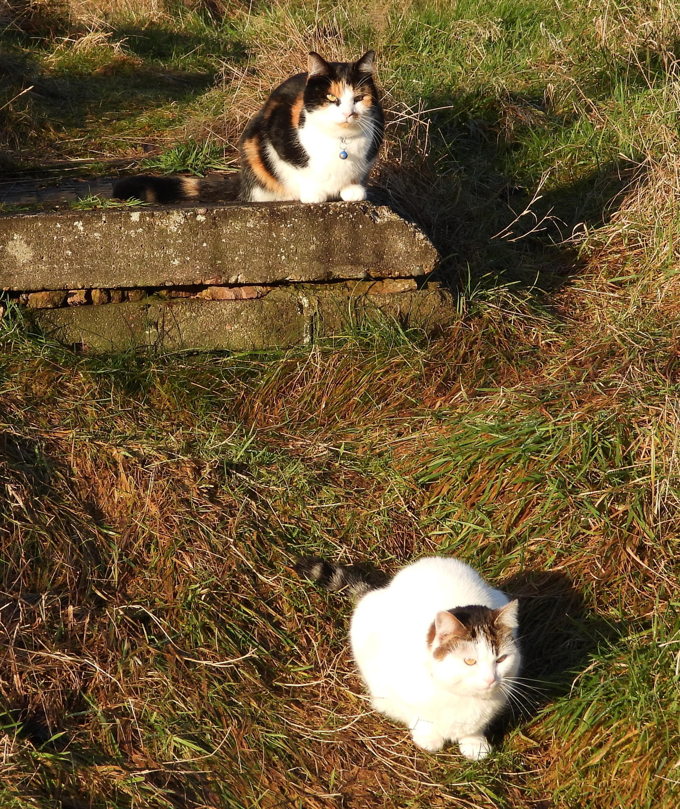
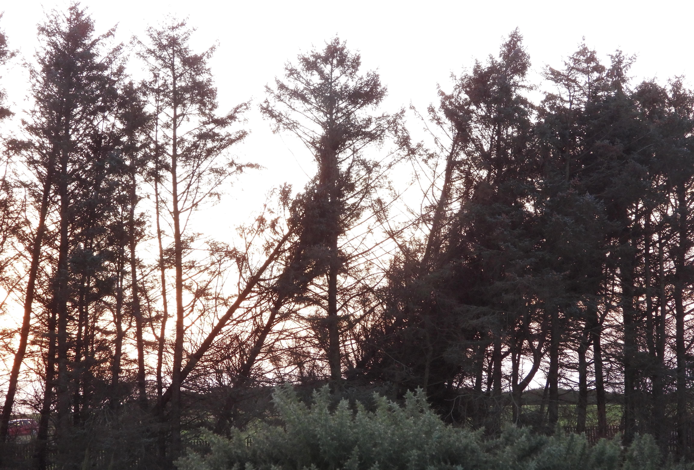
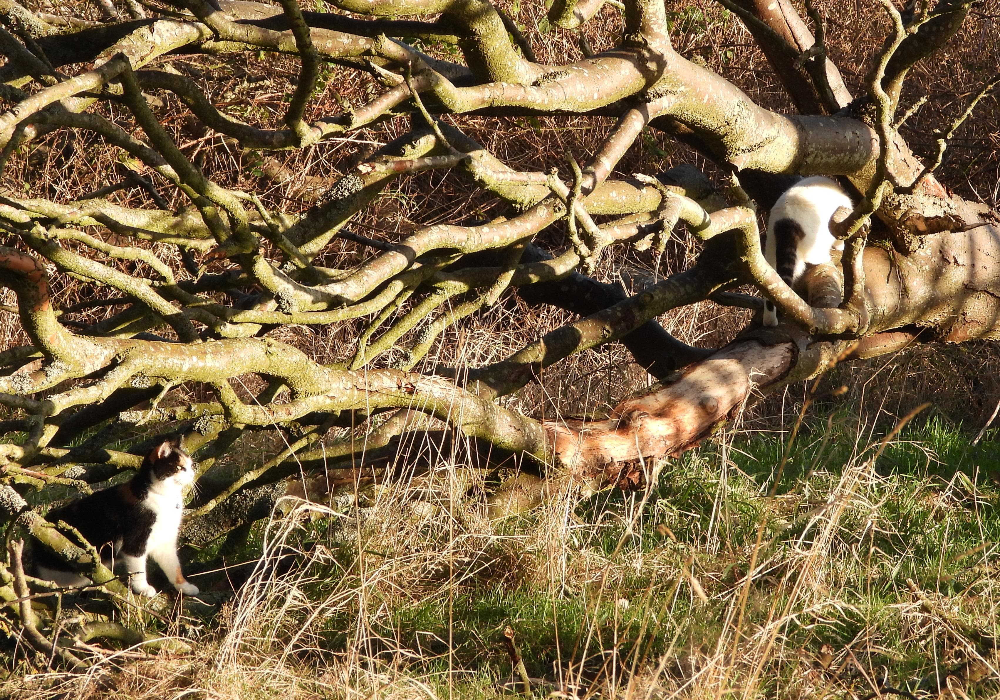
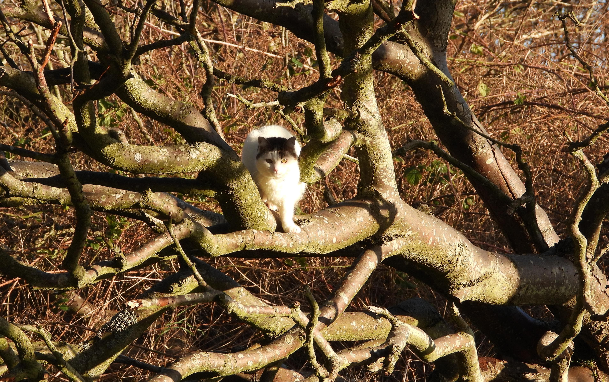
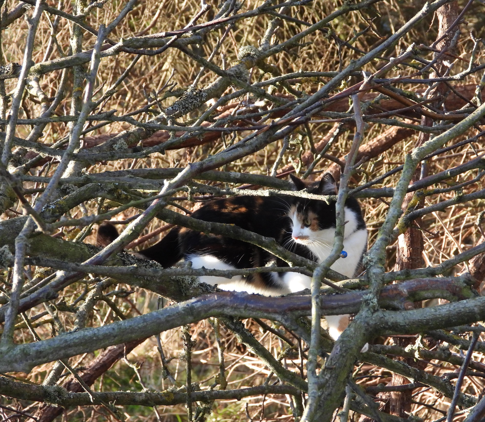
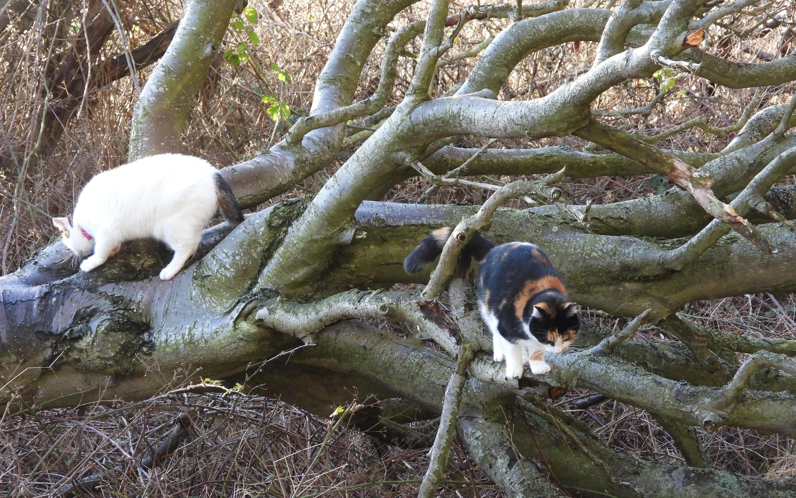
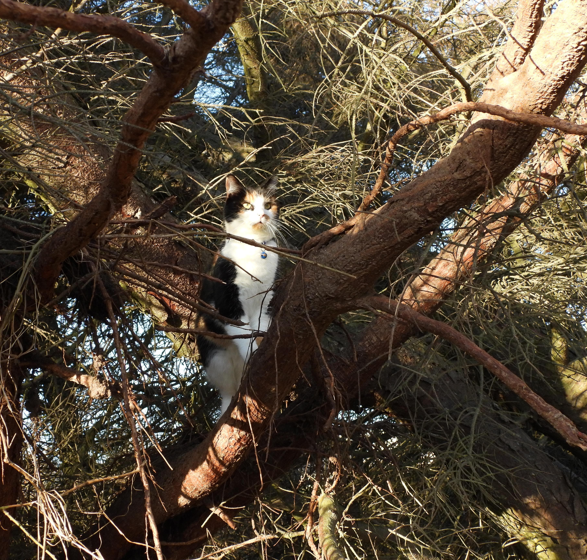
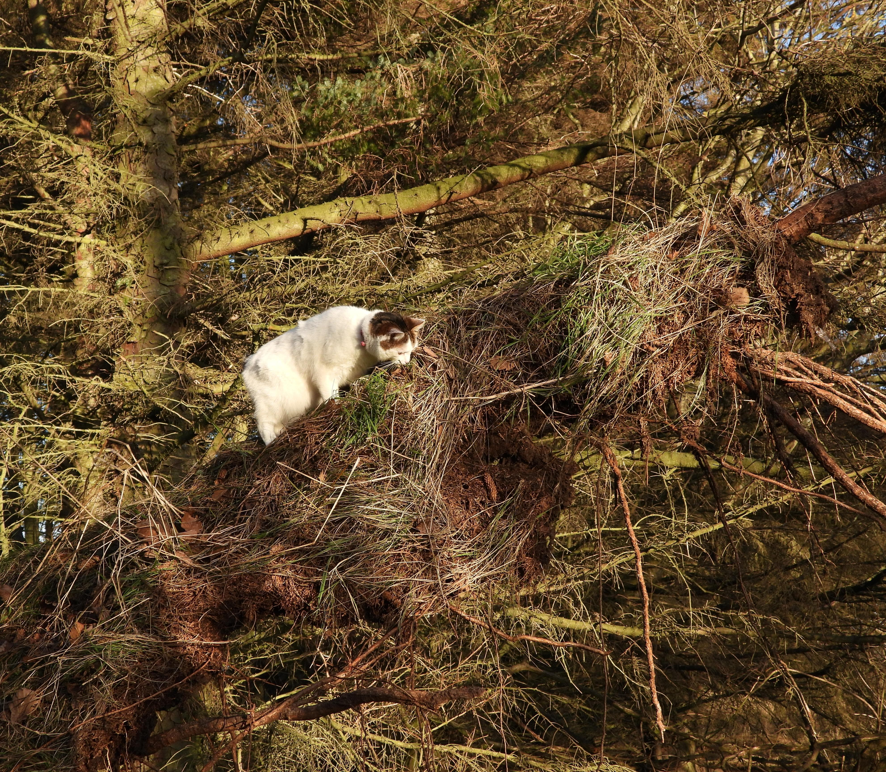
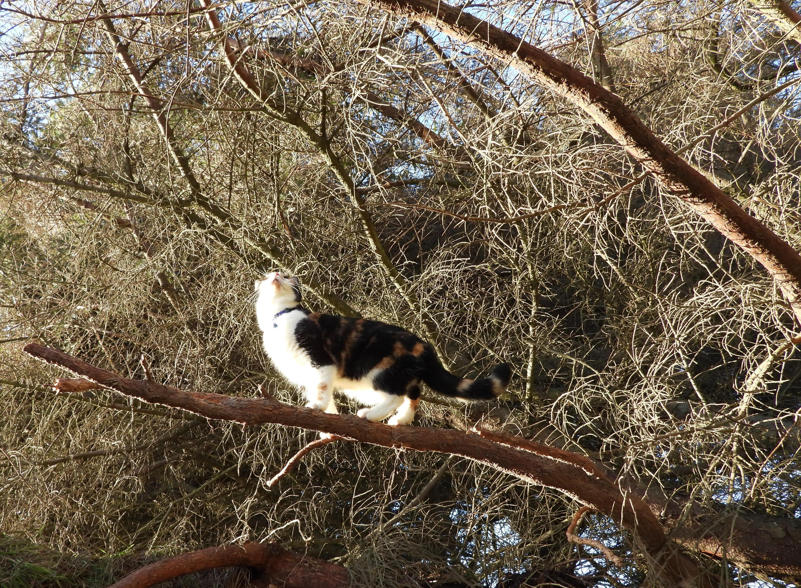
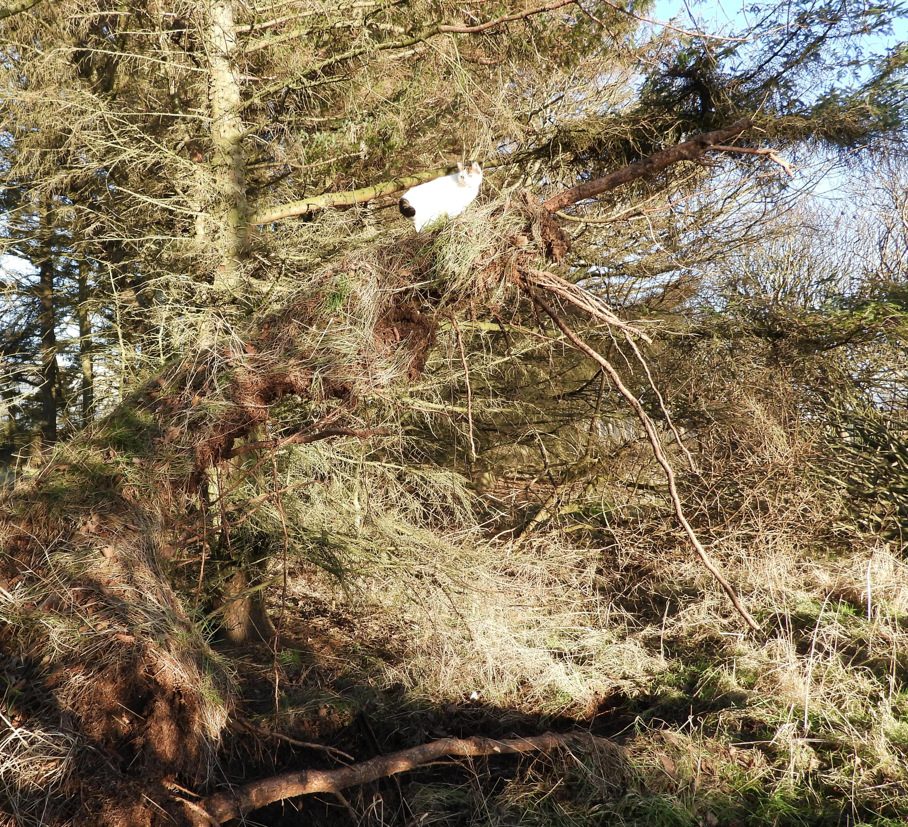

 Popatrz jakie zniszczenia...
 Siła natury...
 Jeszcze jedno powalone drzewo...
 A co to właściwie jest to Boże Narodzenie?
 Jakieś święto, które się odłączyło od swojego początkowego religijnego kontekstu.
 Religijnego?
 Tak... Patrz, taki wielki świerk złamany przez huragan...
 Masz rację...
 Można łatwiej upolować ptaszka.
 ...łatwiej się teraz wspinać.